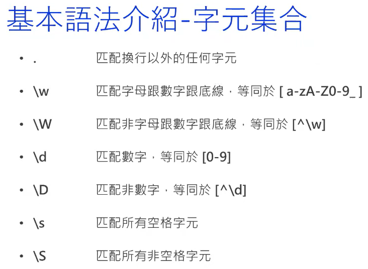

基本語法介紹 - 字元集合
反過來的 pattern 使用範圍廣, 須注意使用. ( ex. \W\D\S )
- . - 匹配換行以外的任何字元, 若需匹配 . 新增反斜線 \.
- \w - 匹配字母&數字&底線, 等同於 [a-zA-Z0-9]
- \W - 匹配非字母&數字&底線, 等同於 [^\w]
- \d - 匹配數字, 等同於 [0-9]
- \D - 匹配非數字, 等同於 [^\d]
- \s - 匹配所有空格&換行字元, 等同於 [\r\n\t\f\v & Unicode space: \u00a0...]
- \S - 匹配所有非空格&換行字元
